8 常用案例
8.1 绘制不同分布的 QQ 图
这里主要是用 qqplotr 包进行绘制，参考的博客：An Introduction to qqplotr。
8.1.1 简单版本
8.1.1.1 绘制正态分布的 QQ 图
library(qqplotr)
library(ggplot2)
# 随机产生数据
set.seed(0)
smp <- data.frame(norm = rnorm(100))
# 绘制
gg <- ggplot(data = smp, mapping = aes(sample = norm)) +
stat_qq_band() +
stat_qq_line() +
stat_qq_point() +
labs(x = "Theoretical Quantiles", y = "Sample Quantiles")
gg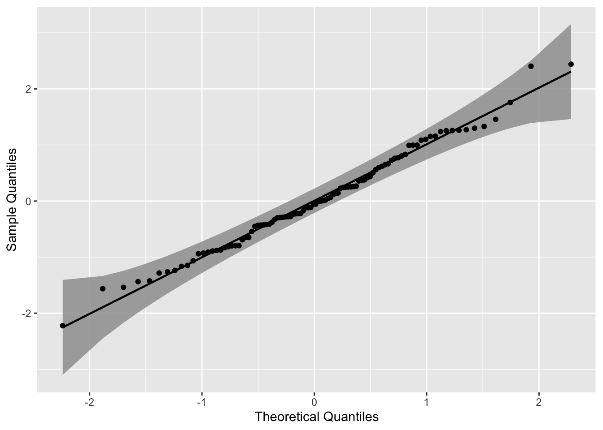
使用三种不同的置信带构造置信区间，其可以用参数 bandType 调整。
library(viridis)
gg <- ggplot(data = smp, mapping = aes(sample = norm)) +
geom_qq_band(bandType = "ks", mapping = aes(fill = "KS"), alpha = 0.9) +
geom_qq_band(bandType = "ts", mapping = aes(fill = "TS"), alpha = 0.9) +
geom_qq_band(bandType = "pointwise", mapping = aes(fill = "Normal"), alpha = 0.9) +
geom_qq_band(bandType = "boot", mapping = aes(fill = "Bootstrap"), alpha = 0.9) +
stat_qq_line() +
stat_qq_point() +
labs(x = "Theoretical Quantiles", y = "Sample Quantiles") +
scale_fill_viridis(discrete = T,direction = -1)
gg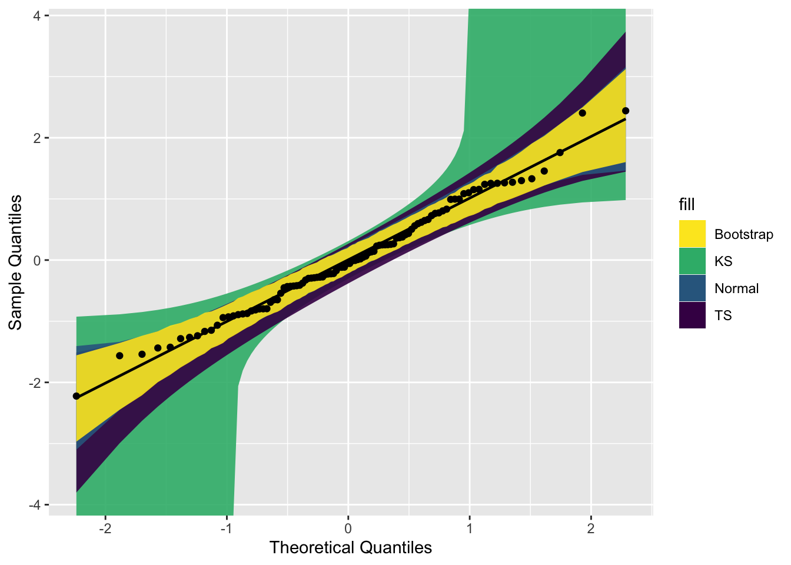
8.1.2 进阶版本
读者绘制正态分布的 QQ 图，还是比较简单。但是如果是其他分布的情况呢？
这里以一个可靠性数据为例子，该数据来源于文献：Badar, M. G., Priest, A. M. (1982). Statistical aspects of fiber and bundle strength in hybrid composites. In: Hayashi, T., Kawata, K., Umekawa, S., eds. Progress in Science and Engineering Composites. Tokyo: ICCM-IV, pp. 1129–1136。
data = data.frame('y' = c(1.339, 1.434, 1.549, 1.574 ,1.589, 1.613, 1.746 ,1.753, 1.764 ,1.807, 1.812, 1.84, 1.852, 1.852, 1.862, 1.864, 1.931, 1.952, 1.974, 2.019, 2.051, 2.055, 2.058 ,2.088, 2.125, 2.162, 2.171, 2.172 ,2.18 ,2.194 ,2.211 ,2.27, 2.272, 2.28, 2.299, 2.308, 2.335 ,2.349 ,2.356 ,2.386, 2.39, 2.41, 2.43, 2.431, 2.458, 2.471, 2.497, 2.514 ,2.558, 2.577, 2.593, 2.601, 2.604, 2.62 ,2.633, 2.67, 2.682, 2.699, 2.705, 2.735, 2.785, 2.785,3.02, 3.042, 3.116, 3.174))8.1.2.1 绘制指数分布的 QQ 图
这里我们绘制其指数分布的 QQ 图。根据指数函数参数拟合该数据之后，得到rate =2.2867，并将其保存到 list 中。
具体如何拟合，读者自行搜索 R 包中的相关函数。
其他代码基本不变，主要是将 stat_qq_line() 和 stat_qq_point() 中的分布设定下，参数设定下。
# exponential distribution
dp <- list(rate = 2.2867)
di <- "exp"
p1 = ggplot(data = data, mapping = aes(sample = y)) +
stat_qq_band(distribution = di, dparams = dp) +
stat_qq_line(distribution = di, dparams = dp) +
stat_qq_point(distribution = di, dparams = dp) +
labs(x = "Theoretical Quantiles", y = "Sample Quantiles") +
theme_bw() +
theme(panel.grid = element_blank())
p1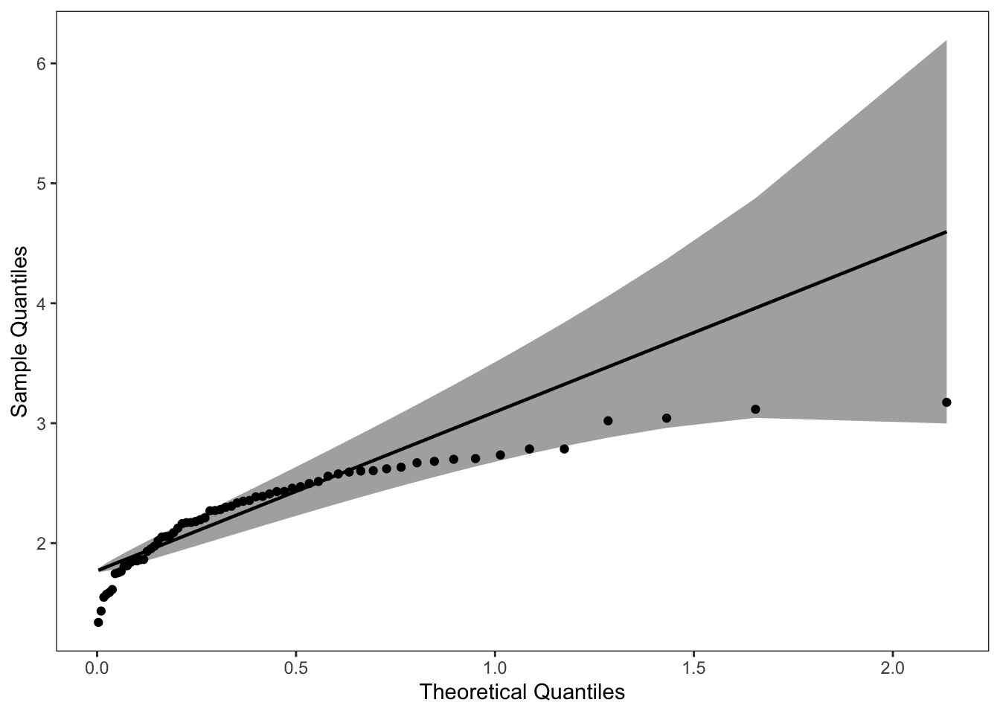
8.1.2.2 绘制威布尔分布的 QQ 图
同理，将该数据应用到威布尔分布中。结果如下：
# weibull distribution
di <- "weibull" # exponential distribution
dp <- list(shape=5.4766,scale=2.4113)
p2 = ggplot(data = data, mapping = aes(sample = y)) +
stat_qq_band(distribution = di, dparams = dp) +
stat_qq_line(distribution = di, dparams = dp) +
stat_qq_point(distribution = di, dparams = dp) +
labs(x = "Theoretical Quantiles", y = "Sample Quantiles") +
theme_bw() +
theme(panel.grid = element_blank())
p2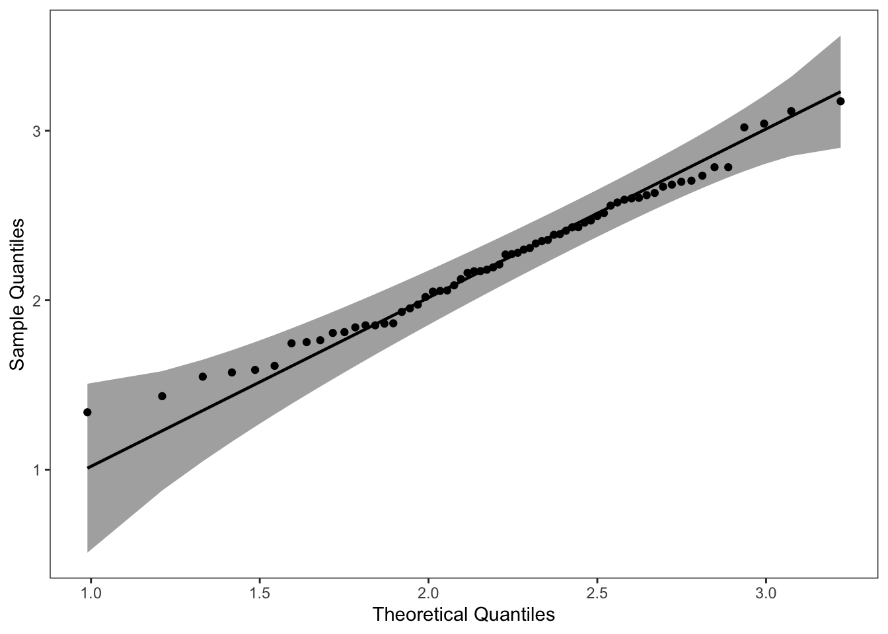
可以看到该数据集，更适合使用 weibull分布进行拟合。
library(cowplot)
plot_grid(p1, p2, ncol = 2, nrow = 1)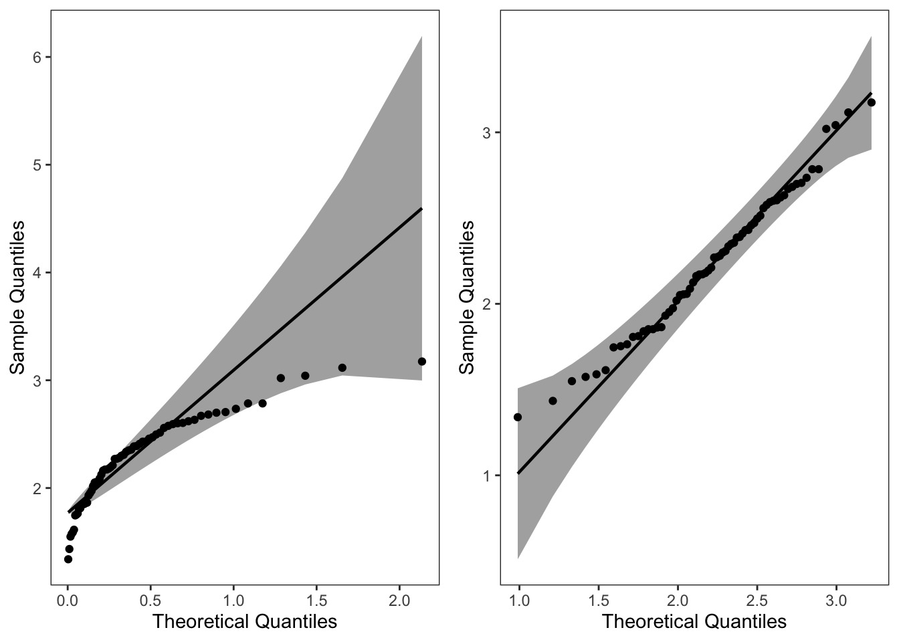
8.2 绘制混合密度函数图以及添加分位数线
主要使用 ggridges 包中的 stat_density_ridges()。参考的博客：https://cran.r-project.org/web/packages/ggridges/vignettes/introduction.html
8.2.2 产生数据集
假设数据来源于一个混合分布。
item <- 10000
inds <- rbinom(1, item, 0.5)
x <- c(rnorm(inds, 1, 1), rnorm(item - inds, 8, 1))
data <- data.frame("value" = x, "class" = rep(1, length(x)))8.2.3 绘制密度函数图并添加分位数线
# 绘图
p1 <- ggplot(data, aes(x = value, y = class, fill = factor(stat(quantile)))) +
stat_density_ridges(
geom = "density_ridges_gradient",
calc_ecdf = TRUE,
quantiles = c(0.025, 0.975)
) +
scale_fill_manual(
name = "Probability", values = c("#E2EAF6", "#436FB0", "#E2EAF6")
) +
theme_bw() +
theme(legend.position = "none", panel.grid = element_blank()) +
labs(x = "x", y = "Density")
p1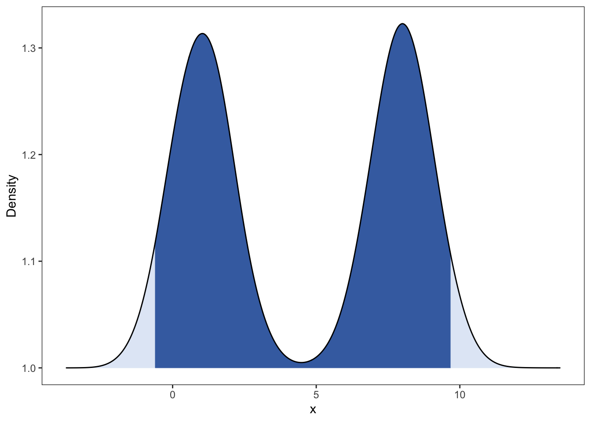
p2 <- ggplot(data, aes(x = value, y = class, fill = factor(stat(quantile)))) +
stat_density_ridges(
geom = "density_ridges_gradient",
calc_ecdf = TRUE,
quantiles = c(0.005, 0.495, 0.51, 0.99)
) +
scale_fill_manual(
name = "Probability", values = c("#E2EAF6", "#436FB0", "#E2EAF6", "#436FB0", "#E2EAF6"),
) +
theme_bw() +
theme(legend.position = "none", panel.grid = element_blank()) +
labs(x = "x", y = "Density")
p2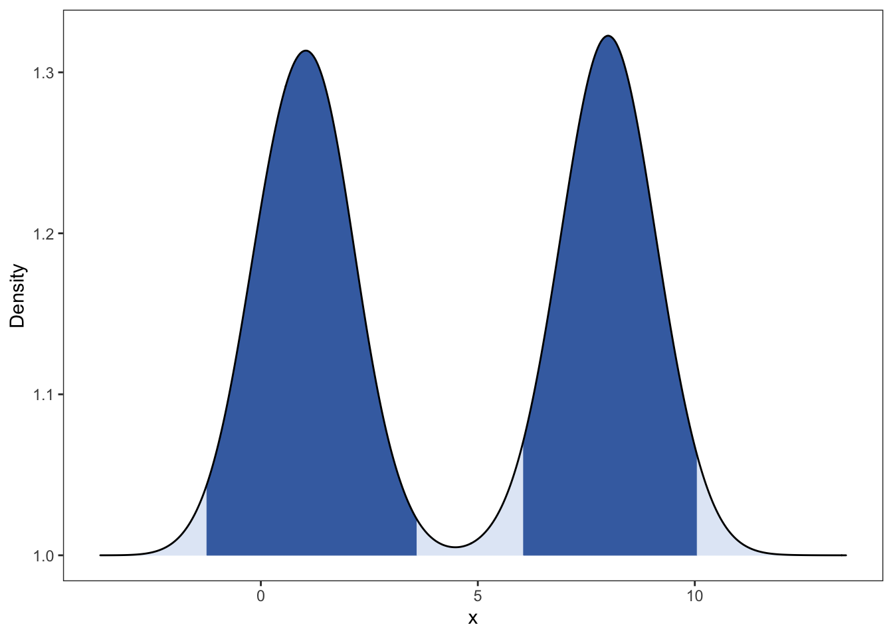
8.3 绘制不同参数的密度函数
8.3.1 Beta 密度函数
绘制不同参数下的 Beta 密度函数。具体该分布的介绍可见：https://en.wikipedia.org/wiki/Beta_distribution
Beta函数如下： \[ B(a,b) = \int_{0}^{1} x^{a-1} {(1-x)}^{b-1} dx,\quad a,b>0 \]
Beta 分布：
随机变量 X 的密度函数为：
\[p(x) = \frac{1}{\mathrm{~B}(\alpha, \beta)} x^{\alpha-1}(1-x)^{\beta-1}\]
存在问题：还未把各个密度函数的参数加入。
## Beta Distribution
library(ggplot2)
library(reshape2)
library(ggsci)
item = 1000
x <- seq(0,1,length = item)
beta_dist <- data.frame(cbind(x,dbeta(x,0.5,0.5), dbeta(x,2,2), dbeta(x,0.5,2),dbeta(x,2,0.5),dbeta(x,1,5),dbeta(x,5,1),dbeta(x,1,1)))
colnames(beta_dist) <- c("x","a=0.5,b=0.5","a=2,b=2","a=0.5,b=2",
"a=2,b=0.5","a=1,b=5","a=5,b=1","a=1,b=1")
beta_dist <- melt(beta_dist,x)
beta_dist$"class" = c(rep(1:3,each = 2*item),rep(4,item))
g <- ggplot(beta_dist, aes(x,value, color=variable))
g + geom_line() +
facet_wrap(vars(class),scales = "free_y") +
labs(title="Beta Distribution", x="x", y="Probability") +
scale_color_aaas() +
theme_bw() + theme(panel.grid = element_blank(),legend.position = 'none') 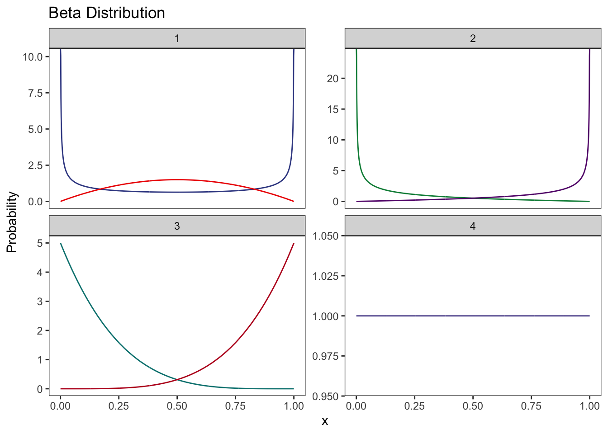
8.4 散点图中加入第三变量的密度函数
### Accept-reject algorithm
### beta(2.7,6.3)
library(ggplot2)
num <- 1000
ys <- runif(num)
us <- runif(num, 0, 2.67)
xs <- dbeta(ys, 2.7, 6.3)
data <- data.frame("x_rand" = ys, "Density" = us, "true_x" = xs)
ggplot(data) +
geom_point(aes(x_rand, Density), col = "#95E1D3") +
geom_area(aes(x_rand, xs),
fill = 4, alpha = 0.5,
color = 1, # Line color
lwd = 0.5, # Line width
linetype = 1
) +
annotate("text", x = 0.3, y = 0.5, label = "sum(xs>us)", size = 5) +
labs(x = "x") +
theme_bw() +
theme(panel.grid = element_blank())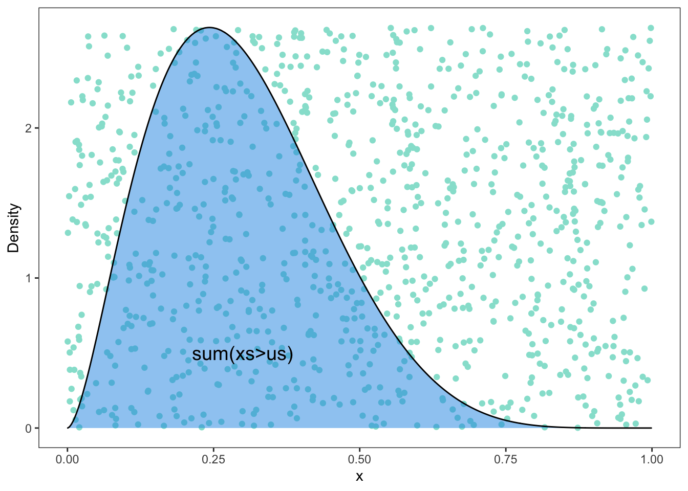
8.5 绘制 Gamma 分布相关图形
- 自定义主题
library(ggridges)
# 自定义主题
theme_manual = function(){
theme(panel.grid = element_blank(),
panel.border = element_blank(),
axis.text = element_blank(),
axis.ticks = element_blank(),
legend.position="none")
}- 数据模拟
library(DT)
library(ggplot2)
num = 100
data = data.frame('id' = 1:num,'value' = rgamma(num,2,1),'class' = factor(gl(5,num/5)))
datatable(data)- 绘图
p1 = ggplot(data,aes(id,value)) +
geom_line() +
geom_hline(yintercept = max(data$value)+0.2) +
geom_hline(yintercept = min(data$value)-0.2) +
theme_bw() +
theme_manual() + xlab('') + ylab('')
p1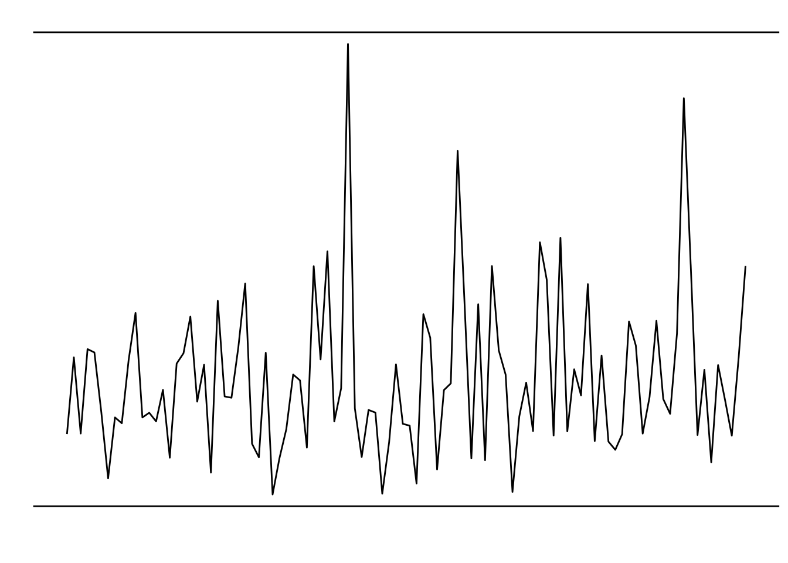
## 纵向密度函数图
p2 = ggplot(data, aes(x = value, y =class, fill = class)) +
geom_density_ridges(aes(),alpha = 0.2,scale = 1,bandwidth = 1) +
coord_flip() +
# scale_point_color_hue(l = 40) +
# scale_discrete_manual(aesthetics = "point_shape", values = c(21, 22, 23,24,25)) +
theme_bw() +
theme_manual() + xlab('') + ylab('')
p2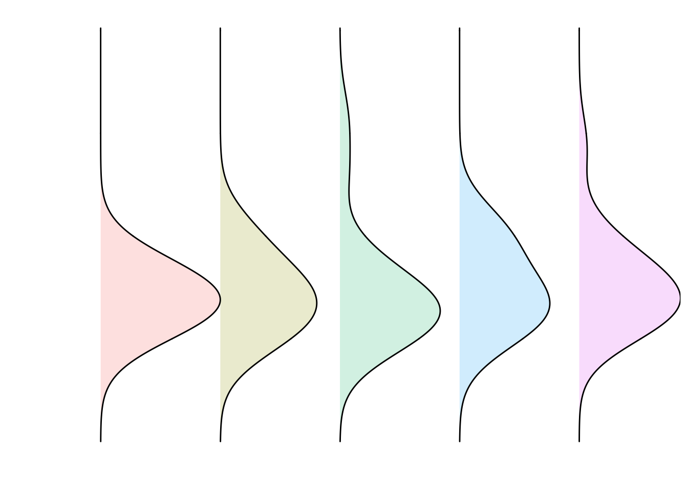
- 合并图形
library(cowplot)
plot_grid(p1,p2,ncol = 1)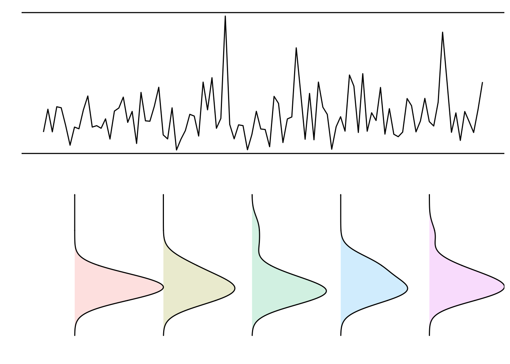
8.6 纯手动复现密度图
老板觉得课件的图形太过模糊和单调，于是想让我用 ggplot2 包复现一下结果，做的更加高清、精美些。于是我花将近一个小时复现了下面这个图形：
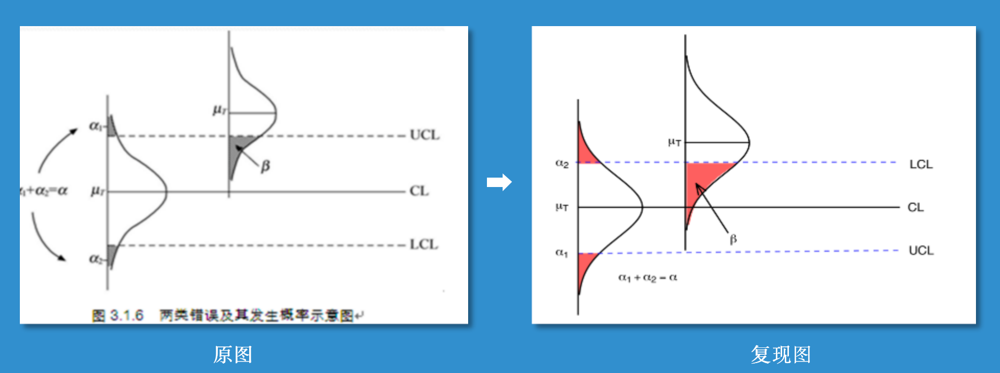
主要有两部分构成：1. 绘制密度函数曲线并填充分位数面积；2. 添加各种线段和文字。
- 数据产生
# 数据产生
set.seed(1)
mu = c(2,5)
std = c(1,1)
num = 1000
r1 = rnorm(num,mu[1],std[1])
r2 = rnorm(num,mu[2],std[2])
data = data.frame('value' = c(r1,rep(NA,num),r2,rep(NA,5*num)),
'class' = factor(rep(c(1:8),each= num)))
knitr::kable(head(data))| value | class |
|---|---|
| 1.373546 | 1 |
| 2.183643 | 1 |
| 1.164371 | 1 |
| 3.595281 | 1 |
| 2.329508 | 1 |
| 1.179532 | 1 |
- 画图
文中还是使用前面自定义的主题。
# 画图
ggplot(data, aes(x = value, y = class,fill = factor(stat(quantile)))) +
# 添加密度函数图
stat_density_ridges(
geom = "density_ridges_gradient",
calc_ecdf = TRUE,rel_min_height = 0.02,
quantiles = c(0.025, 0.975),
alpha = 1,scale = 0.6,bandwidth = 1
) +
scale_fill_manual(
name = "Probability", values = c("#FF0000A0", "white", "#FF0000A0"), #"#0000FFA0"
labels = c("(0, 0.025]", "(0.025, 0.975]", "(0.975, 1]")
) +
# 添加各种线段，文字
annotate("segment", x = mu[1], xend = mu[1], y = 1, yend = 7,colour = "black") +
annotate("segment", x = mu[2]-1, xend = mu[2]-1, y = 1, yend = 7,colour = "#0000FFA0",lty = "dashed") +
annotate("segment", x = mu[1]-2.15, xend = mu[1]-2, y = 1, yend = 7,colour = "#0000FFA0",lty = "dashed") +
annotate("segment", x = mu[2], xend = mu[2], y = 3-0.02, yend = 4.18,colour = "black") +
annotate("segment", x = 0, xend = 10, y = 3, yend = 3,colour = "black") +
annotate("segment", x = -3, xend = 7, y = 1, yend = 1,colour = "black") +
annotate("text", x = mu[1], y = 0.7, label = expression(mu[T])) +
annotate("text", x = mu[1]-2.15, y = 0.7, label = expression(alpha[1])) +
annotate("text", x = mu[1]+2, y = 0.7, label = expression(alpha[2])) +
annotate("text", x = mu[2], y = 2.8, label = expression(mu[T])) +
annotate("text", x = 0.5, y = 3.9, label = expression(beta)) +
annotate(geom = "line",x = c(0.8, 3.1),
y = c(3.8, 3.2),
arrow = arrow(angle = 20, length = unit(4, "mm"))) +
annotate("text", x = mu[1], y = 7.3, label = "CL") +
annotate("text", x = mu[2]-1, y = 7.4, label = "UCL") +
annotate("text", x = mu[1]-2, y = 7.4, label = "LCL") +
annotate("text", x = -1.3, y = 2.3, label = expression(alpha[1] + alpha[2] == alpha)) +
coord_flip() +
theme_bw() +
theme_manual() + xlab('') + ylab('')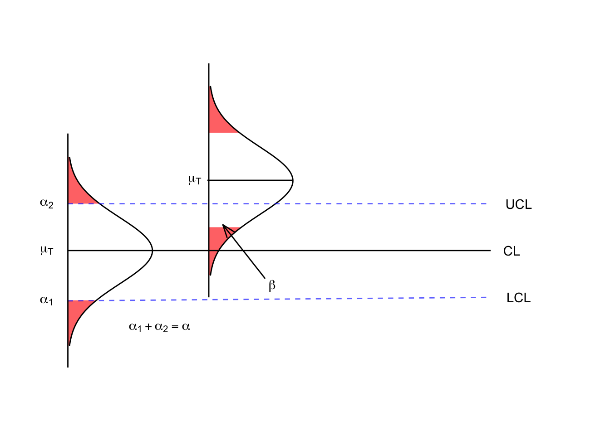
可以看到，现在得到的结果还是有点问题的。笔者能力有限，不能使用代卖复现的一模一样（也是为了省时间），于是我是用了 AI 大法，对该图形进行了修改。最后得到：

8.7 绘制贝叶斯分析相关图形
主要使用 bayesplot 包进行绘制，对应的速查表网址为：https://raw.githubusercontent.com/rstudio/cheatsheets/main/bayesplot.pdf
# 加载需要使用的包
library(showtext)
showtext_auto() #解决中文字体乱码问题
library(bayesplot)
library(rstanarm)
options(mc.cores = parallel::detectCores())
library(ggplot2)
library(dplyr)8.7.1 模型建模
为了展示贝叶斯图，我们将使用 rstanarm::stan glm 拟合线性回归，并始终使用这个模型。
model <- stan_glm(mpg~., data=mtcars, chains=4)
posterior <- as.matrix(model)
# head(posterior)展示你感兴趣参数的后验分布。
showtext_auto()
mcmc_areas(posterior, pars = c("drat", "am", "wt"),prob = 0.8) + ggtitle("Posterior")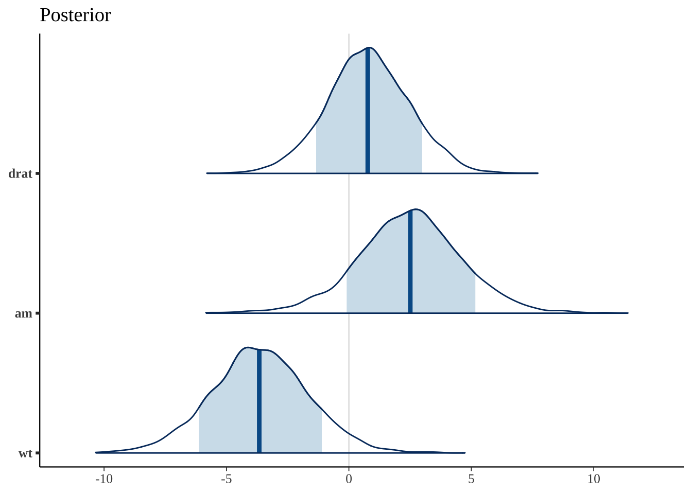
使用轨迹追踪图诊断收敛性
mcmc_trace(posterior, pars=c("sigma", "wt"))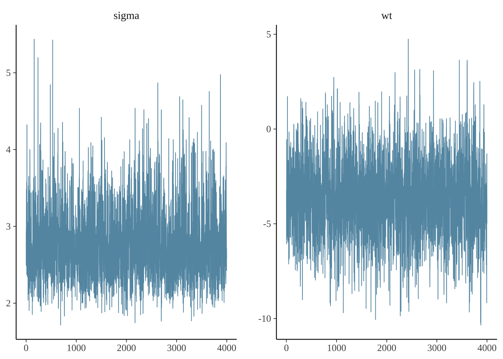
使用as.array，可以提取每一个链的数据。这允许您查看每个链所选参数的跟踪图。
posterior_chains <- as.array(model)
fargs <- list(ncol = 2, labeller = label_parsed)
pars <- c("(Intercept)", "sigma")
chains_trace <- mcmc_trace(posterior_chains, pars = pars, n_warmup = 300, facet_args = fargs)
chains_trace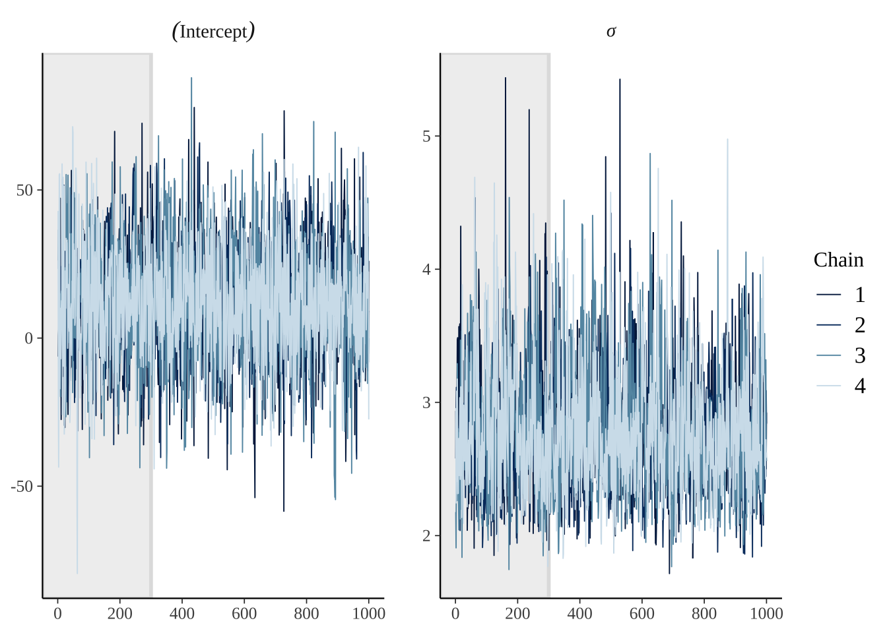
配对图有助于确定是否有任何高度相关的参数。
posterior_chains %>% mcmc_pairs(pars = c("(Intercept)", "wt", "sigma"))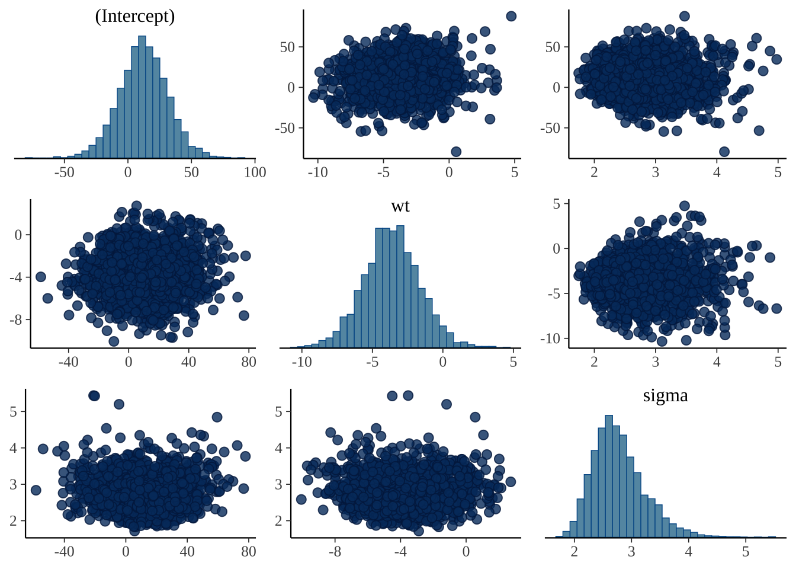
8.7.2 后验预测检查
用后验预测密度来检查模型如何覆盖你的数据。
ppd <- posterior_predict(model, draws=500)
ppd %>%
ppc_intervals(y = mtcars$mpg, yrep = ., x = mtcars$wt, prob = 0.5) +
labs(x = "Weight (1000 lbs)", y = "MPG", title = "")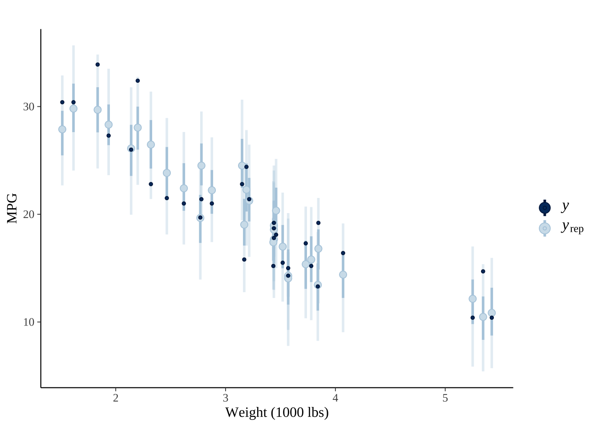
ppd %>% ppc_stat_grouped(y = mtcars$mpg,
group = mtcars$am,
stat = "median", binwidth=0.5)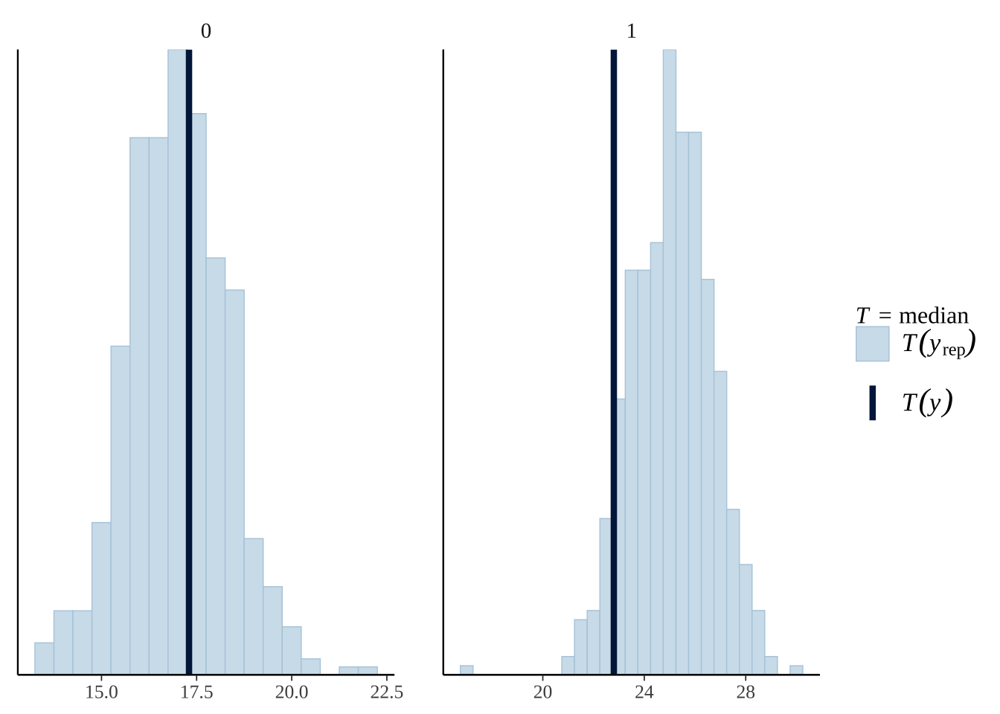